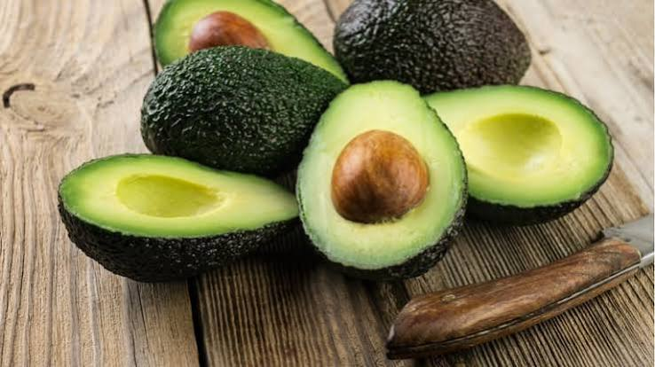
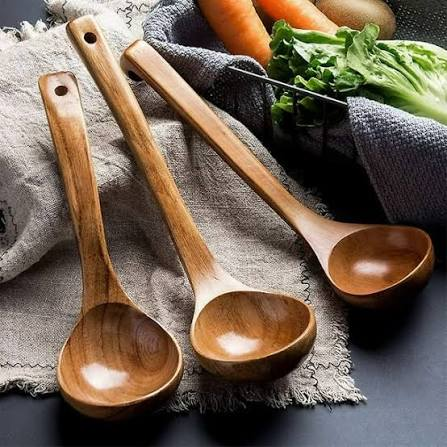
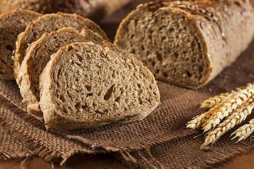
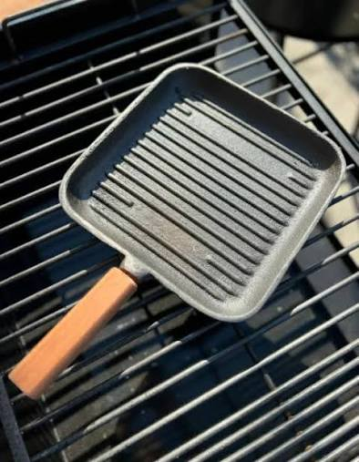
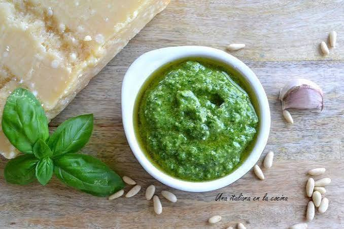

Un plato distinto cada día
Recetas simples y variadas, para cocinar en casa sin complicarte
Sobre Nosotros
Nada de ingredientes raros ni procesos eternos: platos rápidos para esos días de semana ajustados, y alguna receta con más onda para cuando hay tiempo de sobra el fin de semana. Buscamos que cocinar sea simple, con ingredientes fáciles de conseguir y pasos que realmente se entiendan, sin vueltas. El objetivo es que termines con un plato rico en la mesa, no agotada de tanto leer instrucciones.
Recetas del día
Galería de fotos





